ERA 3 – T-Motor Velox F7 SE
Zusammenstellung der Betaflight-Screenshots zum Weitergeben und Prüfen.
Kurzfassung
Betaflight 2026.6.1 auf einem TMOTORVELOXF7SE. Die Konfiguration nutzt CRSF/seriellen Empfänger, MSP-OSD, DShot und ein QUAD X-Mischschema. Vor einem Flug müssen vor allem FC-Ausrichtung, Motorzuordnung, VTX-Tabelle, Akku-Messung und Failsafe geprüft werden.
CLI-Dump
Der korrekte aktuelle Dump für ERA 3 kann hier heruntergeladen werden:
Firmware
Board: TMOTORVELOXF7SE
Firmware: BTFL 2026.6.1
MSP API: 1.48
Empfänger / OSD
Serieller Empfänger aktiv, CRSF. UART2 ist für VTX (MSP + Anzeigeport) belegt.
Motoren
DShot 300 mit bidirektionalem DShot. Motorpole: 14. Dynamischer Leerlaufwert: 28.
PID-Werte
Roll: 58/52/47 · Pitch: 70/62/52 · Yaw: 58/52/0. PID-Tuning-Slider: AUS.
Einbau- und Ausrichtungsreferenz
Für die Prüfung gilt folgende Einbaulage:
- FC: Stecker befinden sich auf der Oberseite; die USB-Buchse zeigt in Flugrichtung nach rechts.
- ESC: XT60 zeigt in Flugrichtung nach vorne.
Diese Referenz muss mit der konfigurierten FC-Ausrichtung und der tatsächlichen Montage übereinstimmen.
Vorbedingungen und Kontrollpunkte
- FC-Ausrichtung: Roll 180° und Yaw 90° müssen zum tatsächlichen Einbau passen.
- Motoren: Motorreihenfolge, Drehrichtung und „Motor direction is reversed“ ohne Propeller testen.
- VTX: Die Warnung zur nicht korrekt eingerichteten VTX-Tabelle beachten und Tabelle im Video-Sender-Reiter prüfen.
- Systemfrequenzen: Gyro 8 kHz und PID-Loop 4 kHz müssen zur FC-/Filter-Konfiguration passen.
- Akku: Spannungs- und Stromanzeige gegen ein Messgerät kalibrieren.
- Failsafe: Verhalten bei Funkverlust testen; keinen Test mit montierten Propellern durchführen.
- Blackbox: Nach einem kurzen Testflug Log auf Vibrationen, Filterung und PID-Verhalten prüfen.
Screenshot-Dokumentation
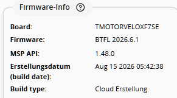
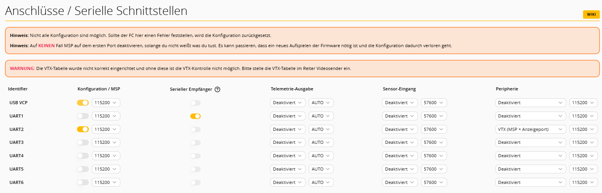
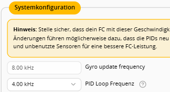
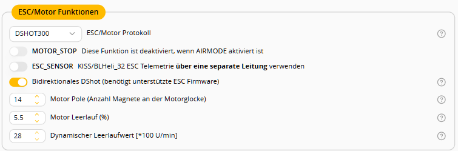
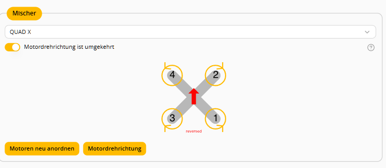
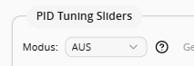
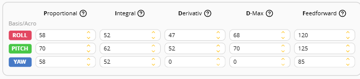

AM32 ESC-Konfiguration (AM32-Konfigurator)
Zusätzliche Screenshots der ESC-Einstellungen. Auffällig und zu prüfen sind insbesondere „Complementary PWM“, die Motor-KV-Angabe, die Strom-/Spannungsgrenzen sowie die Einstellungen für Bremsen und Startverhalten.
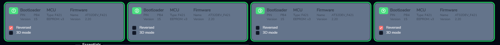
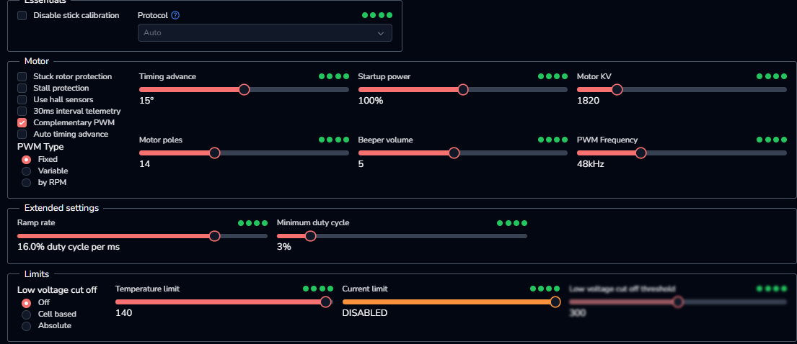
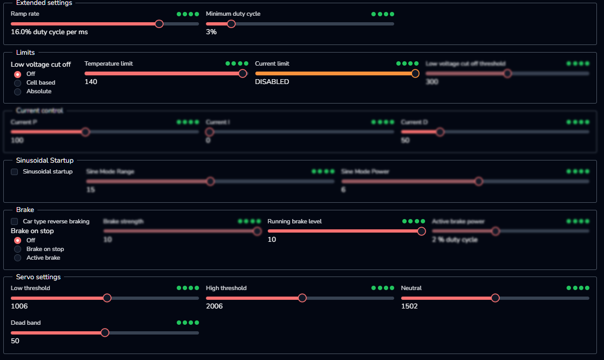
Zusätzliche Firmware-Info
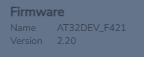